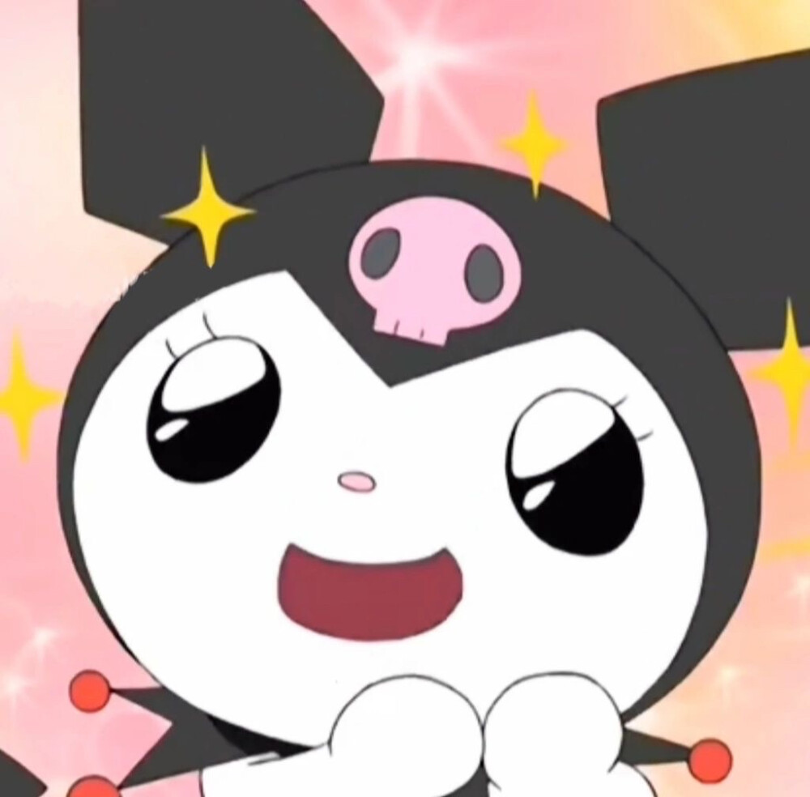

Kuromi
Kuromi

Overview
Kuromi is a Sanrio character created in 2005 as a mischievous rival to My Melody. She is a black bunny who wears a pink skull hood, playful and a bit rebellious, with a soft heart underneath.
She first appeared in My Melody's animated series and later grew into her own beloved character with a dedicated fan base. Her stories often revolve around daily life and her friendly rivalry with My Melody.
Despite her edgy look, Kuromi is kind at heart. She loves black-and-pink styling and her signature skull hood. Across the world—especially in Asia—she has many fans. In early stories she and My Melody were once partners; playful conflicts led to their rivalry, but My Melody still sees Kuromi as a friend.
 |
 |